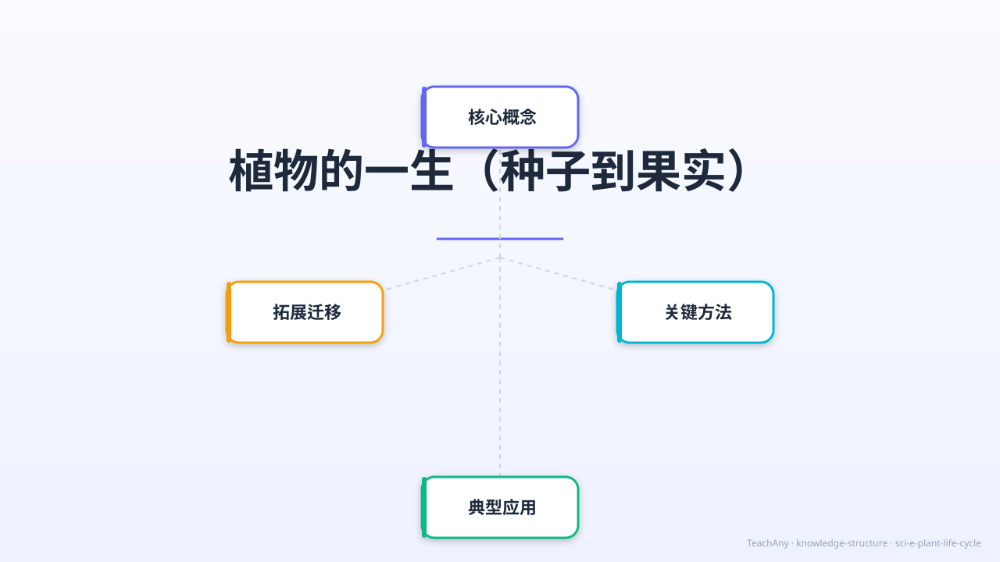

🌱
植物的一生
种子到果实 · 小学科学 G3 · 生命科学
🌰 种子萌发
🌿 幼苗生长
🌸 开花传粉
🍎 结果传播
🔄 生命循环
一粒小小的种子，埋进土里，浇上水，在阳光下慢慢长大，最后开出美丽的花，结出甜甜的果实——
这就是植物神奇的一生！今天我们来追随一粒种子的旅程！

知识结构主图：围绕「植物的一生」核心问题呈现 萌发条件→生长阶段→传粉方式→种子传播 学习模块
🌰 情境引入
ABT 叙事结构：探索植物生命的奥秘
AND — 背景
植物随处可见：花园里的玫瑰、田野里的麦子、森林里的大树……
它们都是从一粒种子开始的。
植物会生长、会开花、会结果，还会把自己的种子传播到远方。
BUT — 冲突
但是，植物不能自己走动，它们怎么找到水？
怎么让花粉从一朵花传到另一朵花？
没有腿和翅膀，种子又怎么"旅行"到新家园？🌍
更奇怪的是：发芽居然不需要阳光！
THEREFORE — 探究
所以，今天我们要追随一粒种子，探索植物神奇的一生：
从种子到发芽、从幼苗到开花、从传粉到结果、再到种子的新旅程。
准备好了吗？🌱
🎯 学习目标
完成本课后，你将能够…
💧
说出种子萌发的3个必要条件（水分、温度、空气），并知道发芽不需要阳光
🌿
按顺序说出植物一生的6个阶段：种子→发芽→幼苗→开花→结果→种子成熟
🐝
区分虫媒花和风媒花的特征，举出各2个生活中的例子
🌬️
说出种子/果实的4种传播方式：风力、动物、水流、弹射，各举1例
📅
区分一年生植物与多年生植物，理解生命周期的不同
🔬
通过虚拟种植互动，体验植物生长过程，理解各因素对生长的作用
🎬 植物一生的旅程
动态演示：从种子萌发到果实传播的完整历程（22秒）
📹 植物的一生 · 5大场景动画：标题 → 种子萌发（根向下/茎向上）→ 幼苗生长开花 → 传粉结果 → 种子传播
· 1920×1080 · H264+AAC
🌰 种子萌发的条件
🎧 点击收听语音讲解 ▶
💧
水分
种子吸水后细胞激活，胚开始发育。干燥状态下种子处于休眠。
🌡️
适宜温度
大多数种子在 15–30°C 发芽最好。温度过低或过高都会抑制萌发。
💨
空气（氧气）
种子萌发需要有氧呼吸提供能量，密封或水浸太深会缺氧而死。
⚠️
重要提醒：发芽不需要阳光！
种子本身储存了足够的营养（淀粉、蛋白质、脂肪），发芽时靠这些营养维持生命。
直到长出叶子，才需要阳光进行光合作用制造食物。
🌿 植物生长的6个阶段
每个阶段都有独特的特征和需求
🌸 传粉方式
开花是繁殖的信号——不同植物用不同策略完成传粉
🐝 虫媒花
- 🌈 颜色鲜艳，吸引昆虫目光
- 🌺 花朵较大，有花蜜和香味
- 🔬 花粉粒较大，表面粗糙/有黏性
- 🐝 依靠蜜蜂、蝴蝶、蛾子传粉
- 📌 例：桃花、苹果花、油菜花、向日葵
💨 风媒花
- 🤍 花小、颜色不鲜艳，不需要吸引昆虫
- 🌾 花丝长，花粉容易飘散
- 🔬 花粉粒极细小，轻盈光滑
- 💨 产生大量花粉，靠风力传播
- 📌 例：玉米、水稻、柳树、松树
🌍 种子的传播方式
种子需要"旅行"到新地方，避免与母株竞争，扩大种群
🌬️
风力传播
蒲公英有绒毛，杨树有白絮
可随风飘数公里
🐾
动物传播
苍耳有钩刺粘附动物毛发
吃了果实的鸟排出种子
🌊
水流传播
椰子有气腔能在海上漂浮
莲蓬随水流传播
💥
弹射传播
凤仙花果实成熟后弹开
豌豆荚爆裂弹射种子
📅 一年生 vs 多年生植物
不同植物的寿命差异很大
| 类型 | 生命周期 | 特点 | 常见例子 |
| 🌱 一年生植物 |
1年以内完成整个生命周期 |
当年开花结果，秋冬死亡，靠种子延续 |
向日葵、玉米、牵牛花、水稻 |
| 🌿 二年生植物 |
需要跨两个年度 |
第一年生长，第二年开花结果后死亡 |
萝卜、白菜、胡萝卜 |
| 🌳 多年生植物 |
多年持续生存 |
每年开花结果，可存活数年至数百年 |
苹果树、松树、菊花、牡丹 |
🌱 虚拟植物生长模拟器
🎮 互动实验：点击下方按钮，照顾你的虚拟植物！看它从种子一步步长大开花！
当前阶段：种子 🌰
💧 水分
50%
🌿 养分
50%
☀️ 光照
50%
📊 生长进度
0%
点击上方按钮开始照顾你的植物！记住：发芽只需要水分、温度和空气，不需要光照哦～
🔢 拖拽排序挑战
把植物一生的阶段按正确顺序排列——拖拽移动它们！
📌 操作说明：拖拽下方标签，按植物生长的正确顺序排列。
排好后点击「检查答案」按钮验证！
📝 课堂小测验
做完题目后会显示详细解析和错误分析，帮你弄清楚原因
第 1 题 / 共 5 题
种子萌发（发芽）需要哪些必要条件？
✅ 正确答案：B）水分、适宜温度、空气
💡 错误分析：很多同学选 A，认为阳光是必要的——这是最常见的误区！
种子里储存了淀粉、蛋白质等营养物质，可以自己供给发芽所需的能量。
直到长出绿色叶片，才需要阳光进行光合作用。
第 2 题 / 共 5 题
下列哪种植物属于虫媒花（靠昆虫传粉）？
✅ 正确答案：C）苹果花
💡 错误分析：
水稻、玉米、松树都是风媒花——花朵小且不显眼，大量花粉随风传播。
苹果花颜色鲜艳、香味浓郁、有花蜜，是典型虫媒花，靠蜜蜂等昆虫传粉。
判断口诀：颜色鲜=虫媒，花小素=风媒。
第 3 题 / 共 5 题
蒲公英的种子靠什么方式传播？
✅ 正确答案：A）风力传播
💡 蒲公英的种子上有白色伞状绒毛（冠毛），使种子非常轻盈，
一阵微风就能让它飘出数公里远。
其他例子：杨树絮、柳树絮也是风力传播。
第 4 题 / 共 5 题
下列关于植物生长说法，哪一项是正确的？
✅ 正确答案：D）植物开花后，经过传粉受精，才能结出果实
💡 各选项错因：
A——实际上是根向下长、茎向上伸（根有向地性，茎有向光性）；
B——发芽时靠种子自身营养，不是"不需要养分"，养分来自种子内部；
C——向日葵是一年生植物，当年秋天结果后整株死亡；
D——正确！传粉→受精→子房发育成果实，这是有花植物的繁殖关键步骤。
第 5 题 / 共 5 题
苍耳靠哪种方式传播种子？
✅ 正确答案：B）动物传播
💡 苍耳果实外面布满了弯钩状的刺，可以牢牢地钩住动物毛发或人的衣物，
搭"顺风车"到达新地方后再脱落生根。
这是一种典型的"被动搭载"策略。类似的还有鬼针草。
🏅 成就徽章
完成课堂任务，解锁植物学专家徽章！
🌱
种子探索者
了解种子萌发的三个条件
🔒 未解锁
📖 课堂小结
植物的一生是一个完整的生命循环
🌰 种子
→
🌱 发芽
水+温度+空气
→
🌿 幼苗
需要阳光
→
🌸 开花
传粉
→
🍎 结果
→
🌰 种子传播
→
🔄 新循环
💧 萌发三要素（缺一不可）
水分 + 适宜温度 + 空气（氧气）
注意：不需要阳光！
🌸 传粉两大方式
虫媒花（鲜艳+香）→ 蜜蜂蝴蝶
风媒花（小+素）→ 风力传播
🌍 种子四种旅行方式
🌬️风 · 🐾动物 · 🌊水流 · 💥弹射
📅 植物寿命分类
一年生（向日葵）· 二年生（萝卜）
多年生（苹果树）
植物的一生：种子→发芽（需水+温度+空气）→幼苗（需阳光）→开花（传粉）→结果→种子传播→新的循环。
每一粒种子都是一个新生命的开始！🌱
🎧 语音导学模式
按顺序收听完整语音课程，可以边读课件边听讲解